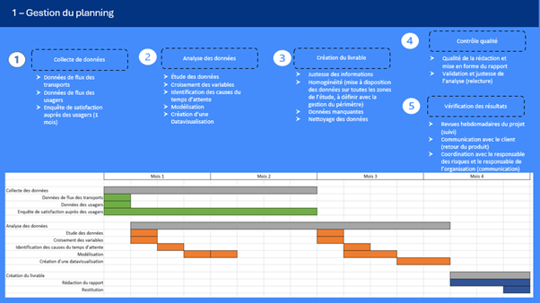
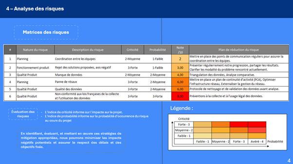
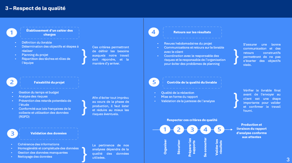

Project management
This project was done as part of a course teaching us the concepts and methods of organizing a project. The goal was to learn how to identify the steps needed and the risks to consider in order to manage a project properly.
Our goal was to plan a fictional survey aimed at improving bus, subway, and tram schedules in a city, to reduce waiting times for riders. By thinking about the steps to follow and clearly setting the limits and risks of our survey, we built a schedule to estimate how much time the work would take, while also considering other factors. It was interesting to see how each part of managing a project ended up linking to another part, which helped us to set clear goals.
This project was summarized inside a PowerPoint which explained the different parts of managing this survey.
Skills gained:
- Building a schedule
- Identifying, defining, and planning the needs of a project
- Carrying out a risk analysis
- Communicating between the different roles in a project management team
Illustrations



Overview of the PowerPoint